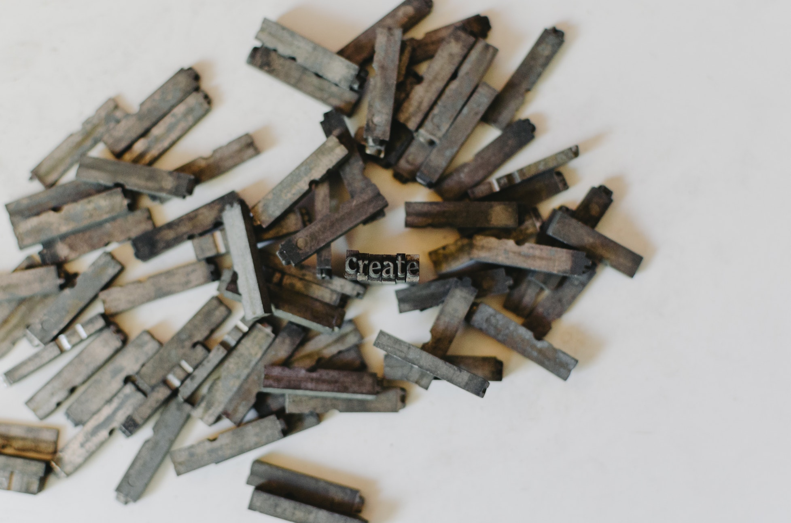

The  News
News
The friendly hire: Why soft skills are essential in the workplace

Humans are underrated, Tesla CEO Elon Musk had once stated. At a time when artificial intelligence is changing our lives, leading to debate on the threat it poses to humans in the workspace, this view may seem posed to offer solace. But he is not wrong; and people are reinventing themselves to stay relevant at work.
A 2017 PricewaterhouseCoopers report titled ‘Workforce of the future: the competing forces shaping 2030’ found 86% of human soft skills will always be in demand. It also reported that 74% of those approached were ready to learn a new skill or retrain to keep themselves employable. What exactly are soft skills? Professional networking giant LinkedIn defines these as “less tangible and harder to quantify, such as etiquette, getting along with others, listening and engaging in small talk”. Communication, problem-solving, creativity and emotional intelligence all fall into its ambit.
In 2008, Google launched the Project Oxygen study to determine what makes a great manager. Soft skills formed the seven top characteristics even in an environment where one expects technical skills to hold greater value. The multi-year research initiative has since grown into a comprehensive programme, but the latest list from 2018 holds similar insights. In more recent data, LinkedIn’s ‘2019 Global Talent Trends Report’ notes that “as automation and AI continue to reshape entire industries, companies and jobs, strong soft skills — the one thing that machines can’t replace — are becoming absolutely vital”. According to it, 92% of recruiters said soft skills matter as much or more than hard skills when they hire; 89% felt “bad hires” have poor soft skills.
Creativity comes alive
Being an animator requires a combination of creative and technical prowess to keep pace in an ever-evolving environment
I am a Department Technical Director Specialist at DreamWorks Animation. I have been with DreamWorks for seven years and have had the opportunity to work with talented artists and contribute on magical, inspiring stories like “Kung Fu Panda 3”, “Trolls”, “Madagascar 3: Europe’s Most Wanted”, “The Boss Baby”, and “How to Train Your Dragon: The Hidden World”.
In an animated film, the role of a Technical Director (TD) is to design artistic workflows, develop tools, and integrate new technology into the pipeline. A TD provides critical support to a show’s artists and department heads.
They are the key players who troubleshoot and solve challenging problems during shot work, which could be related to fur, particle effects, animation or rendering. In the latest project, “How to Train Your Dragon: The Hidden World”, my work as a lighting specialist has been to integrate our new in-house renderer and image de-noising tools into the pipeline for the lighting department.
I spent my initial years in the ‘Asset creation departments’ — modelling and surfacing. The modelling department is responsible for creating 3D geometric representation of an asset from a 2D drawing. The surfacing department’s role is to add textures, colour and detail to the 3D model of an asset. I created visual development lighting rigs to analyse the look of these assets — characters and their props in different lighting scenarios. I also developed tools for asset costing pipeline that provide the rendering cost and other critical metrics associated with the complexity of the digital assets.
Creativity has no bounds, and technology is what enables this creativity to come to life. Learning never ends, in the field of animation, where technology is ever-evolving; this keeps our work challenging and exciting.